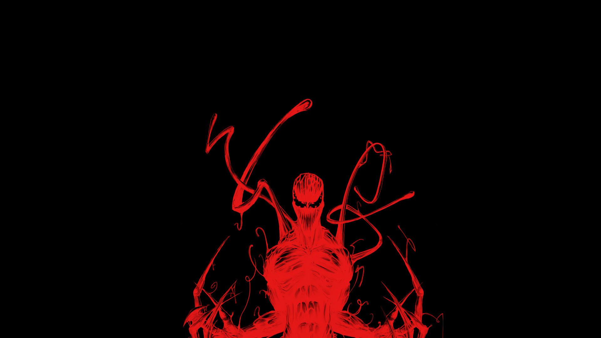
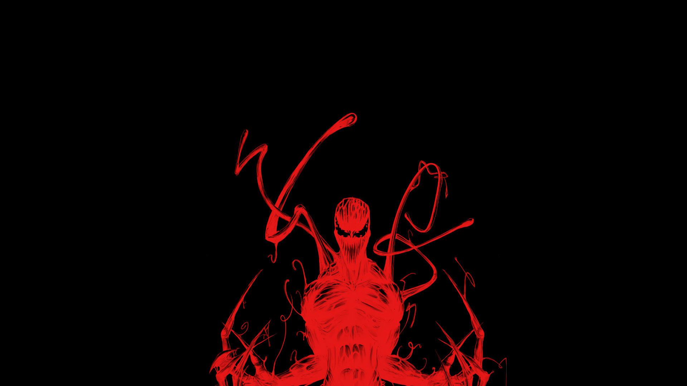

Один из заклятых врагов Человека-паука и Венома.
Карнаж был создан автором Дэвидом Микелайни и художниками Эриком Ларсеномruen и Марком Багли.
Этот персонаж принадлежит к расе внеземных паразитов, известных как симбиотыruen, которые образуют симбиотическую связь
со своими носителями и наделяют их сверхчеловеческими способностями. Будучи отпрыском Венома, Карнаж намного мощнее своего
родителя благодаря биологии симбиотов и во многом является его более мрачной версией. Обычно изображается противником Человека-паука,
в то же время выступая заклятым врагом Венома. Симбиот имел множество носителей. Оригинальный и самый известный с Земли-616 — это Кле́тус Кэ́седи,
серийный убийца из вселенной Marvel, чей садистский характер полностью совпадает с характером симбиота. Среди других известных носителей — Бен Рейли, Карл Малусruen,
а также Гвен Стейси в альтернативной вселенной Ultimate Marvel. Норман Озборн также пользовался симбиотом, взяв себе имя Кра́сный го́блин (англ. Red Goblin).
Впервые он появляется в комиксе The Amazing Spider-Man #361 (апрель 1992).
Убийство,марадерство и охота за Человеком Пауком
Клетус Кэседи
Нью-Йорк
 
